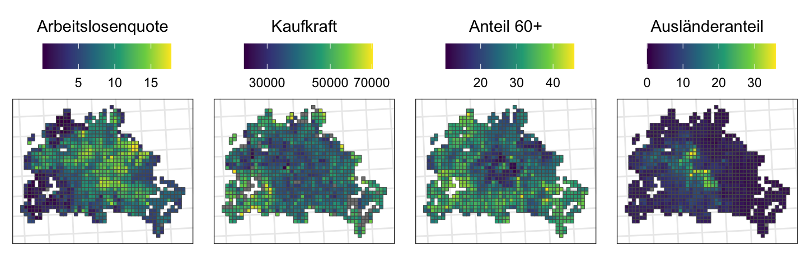
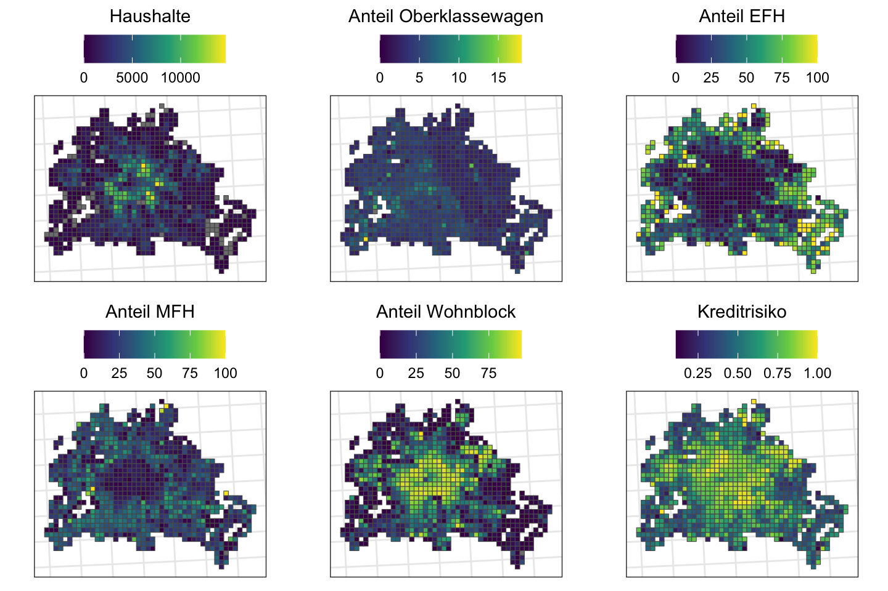

# Für Korrelationsmatrizenlibrary(Hmisc)# Für schönere Latex-Tabellenlibrary(stargazer)library(kableExtra)library(vtable)# Für schönere Plotslibrary(ggpubr)library(ggrepel)library(gridExtra)library(cowplot)# Für schnelleres Einlesen von Datenlibrary(vroom)# Für allgemeine Datenmanipulation und Plottenlibrary(tidyverse)# Fürs Arbeiten mit Geodatenlibrary(sf)#library(huxtable)
Importieren der Daten
Die Daten wurden im Dokument ‘cleaning.Rmd’ aufbereitet und abgespeichert.
ℹ Using "','" as decimal and "'.'" as grouping mark. Use `read_delim()` for more control.
Rows: 19044 Columns: 22
── Column specification ────────────────────────────────────────────────────────
Delimiter: ";"
chr (18): Statistik_Label, Zeit_Code, Zeit_Label, 1_Merkmal_Code, 1_Merkmal_...
dbl (3): Statistik_Code, 1_Auspraegung_Code, BEVSTD__Bevoelkerungsstand__An...
num (1): Zeit
ℹ Use `spec()` to retrieve the full column specification for this data.
ℹ Specify the column types or set `show_col_types = FALSE` to quiet this message.
Der hier gezeigt Teil des Grids hat 1016 Quadrate, also eine Fläche von 1016km². Berlin hat genaugenommen nur eine Fläche von 891,8 km², wir betrachten also auch teilweise Flächen, die eigentlich nicht mehr zu Berlin gehören, da wir alle Quadrate einbeziehen, die (auch nur teilweise) mit den Stadtgrenzen überlappen. Die andere Möglichkeit wäre gewesen, die Fläche zu unterschätzen und nur Quadrate zu betrachten, die komplett innerhalb der Stadtgrenzen liegen.
Rent Daten
Wie hat sich die Verteilung der Kaltmieten über die Jahre geändert?

Social Daten
Wie sehen ausgewählte Social-Variablen auf einer Karte aus?
Code

Code
Die restlichen Variablen auf einer Karte für den Anhang
Code

Code